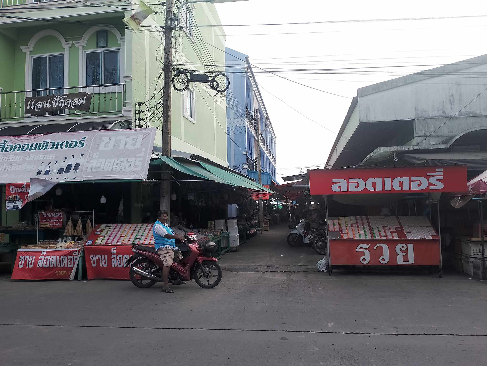

ตลาด
ตลาดย้อนยุค@ปากพนัง
.....ตลาดย้อนยุคปากพนัง ตลาดริมน้ำคลองบางฉนาก เป็นตลาดที่สะท้อนถึงวิถีชีวิตพื้นบ้านของชาวปากพนัง จุดเด่นของตลาดคือเรื่องของอาหารมีทั้งคาว หวาน โดยเน้นอาหารโบราณท้องถิ่นที่ขึ้นชื่อ เช่น หมี่ผัดปากพนัง ข้าวยำห่อใบบัว ห่อหมก สมุนไพร ขนมดอกอัญชัน ลูกชุบ ฯลฯ ส่วนภาชนะที่ใส่ขนมจะเป็นเครื่องปั้นดินเผา กะลามะพร้าว ใบตอง ใบบัว หมาจาก (กระบวยสำหรับตักน้ำที่สานด้วยใบจาก) นอกจากนี้พ่อค้าแม่ค้าแต่งกายแบบย้อนยุคให้เป็นเอกลักษณ์ รวมไปถึงการแสดงดนตรีไทย การรำมโนราห์ เพื่อเป็นการสร้างสีสันให้กับตลาดแห่งนี้ ตลาดเปิดทุกวันอาทิตย์และวันหยุดนักขัตฤกษ์ เวลา 15.00-20.00 น.
ตลาด 100 ปี

.....ตั้งอยู่ในบริเวณท่าเรือข้ามฟาก ฝั่งตะวันออกของแม่น้ำปากพนัง เป็นตลาดไม้เก่าแก่ดั้งเดิมมากว่า 100 ปี อาคารบ้านเรือนส่วนใหญ่สร้างด้วยไม้ ด้วยความที่ไม่ได้เป็นตลาดปรุงแต่งให้เก่าเหมือนหลาย ๆ ที่ ความเรียบง่ายและธรรมชาติของวิถีชีวิตผู้คนแถวนั้นจึงมีมนต์ขลังดึงดูดให้เข้าไปเยี่ยมชม ช่วงต้นตลาดเป็นร้านขายของ ลักษณะเป็นห้องแถวติดกัน ส่วนใหญ่ขายขนมพื้นบ้าน เช่น ขนมลา มันขี้หนู (หัวมันชนิดหนึ่ง) แห้วพื้นบ้าน รวมถึงอาหารทะเลสด ๆ ราคาย่อมเยาที่ชาวประมงนำขึ้นจากเรือมาส่งแม่ค้าในตลาดทุกวัน และมีปลากระบอกแห้งซึ่งเป็นของขึ้นชื่อของที่นี่ รวมไปถึงกุ้งแห้ง ปลาหมึกแห้ง และอื่น ๆ อีกมากมายที่สามารถซื้อนำกลับไปเป็นของฝากได้ตลาดเปิดทุกวัน เวลา 15.00-18.00 น.